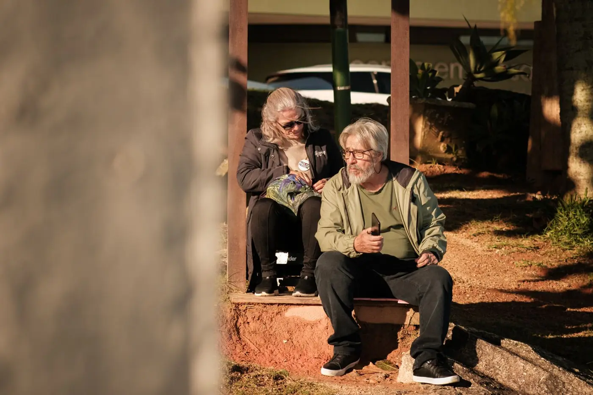
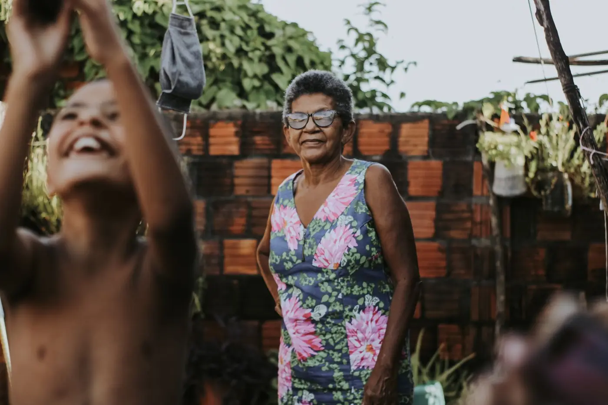

Aposentadorias
Para quem contribuiu durante a vida de trabalho, na cidade ou na roça.
Entender este assuntoAdvocacia previdenciária · interior de Minas Gerais
Aposentadoria, BPC, pensão e outros benefícios do INSS explicados com calma e em palavras simples, para você e para a sua família.
Pode trazer a famíliaFilhos e netos são bem-vindos na conversa.
Com calma
Carta do INSS, CNIS, carência, perícia: são muitas palavras difíceis. O nosso trabalho começa explicando o que cada uma quer dizer para o seu caso.
Áreas de atuação
Escolha o assunto para ler o que é, quem pode se enquadrar e quais documentos separar.
Para quem contribuiu durante a vida de trabalho, na cidade ou na roça.
Entender este assunto
Auxílio-acidente, salário-maternidade, auxílio-reclusão e outros amparos.
Entender este assunto

Um salário mínimo para idosos a partir de 65 anos ou pessoas com deficiência de baixa renda.
Não é aposentadoria: é um benefício assistencial, que não exige contribuição ao INSS.
Entender o BPCConferir um benefício já concedido, quando algo pode ter ficado de fora.
Entender este assuntoPasso a passo
Quatro etapas, no seu ritmo. Cada caso tem o seu tempo, e você é avisado de cada passo.
Você conta a sua situação, pessoalmente, por telefone ou por vídeo. Pode trazer alguém da família.
Mostramos o que separar e ajudamos a conseguir o que estiver faltando, como o extrato do CNIS.
Conferimos os documentos e as regras que podem se aplicar a você.
Explicamos os caminhos possíveis em palavras simples, para você decidir com tranquilidade.
Para a primeira conversa
Não precisa ter tudo. Traga o que tiver em casa; o que faltar, a gente explica como conseguir.
Artigos
Textos curtos, com letra grande, para você e para quem cuida de você.

As idades e o tempo de contribuição mudaram em 2019. Veja, sem complicação, como ficou a aposentadoria por idade na cidade e na roça.
Ler o artigo
Os dois são pagos pelo INSS, mas são coisas bem diferentes. Entender a diferença evita escolher o caminho errado.
Ler o artigo
O CNIS é o "histórico de trabalho" que o INSS usa para decidir os pedidos. Saiba como tirar o extrato e o que conferir.
Ler o artigo
Uma carta de indeferimento não é sempre o fim da história. Entenda o que a carta diz e quais caminhos podem existir.
Ler o artigo
Quem são os dependentes, como provar a união estável e por quanto tempo a pensão é paga ao cônjuge.
Ler o artigoMande a sua pergunta. Respondemos em palavras simples, sem compromisso de contratar.
Perguntar pelo WhatsAppDúvidas frequentes
Como preferir. Atendemos no escritório, por telefone, por chamada de vídeo e, para quem não consegue se deslocar, é possível combinar uma visita.
Pode e é bem-vindo. Muitas conversas são feitas junto com a família. Para que um familiar resolva coisas no seu nome, pode ser preciso uma procuração, e explicamos como fazer.
Não. O BPC é um benefício assistencial para idosos a partir de 65 anos ou pessoas com deficiência de baixa renda. Não exige contribuição, não paga 13º e não deixa pensão.
Não pelo site nem antes de ver os documentos. O valor de um benefício depende do histórico de cada pessoa. Depois da análise, explicamos o que for possível saber.
Guarde a carta e traga para a conversa, ou mande uma foto pelo WhatsApp. Muitas cartas têm prazos, por isso é bom não deixar para depois.
Contato
Atendemos você e a sua família, sem pressa. Escolha o jeito mais fácil: WhatsApp, telefone ou uma visita ao escritório.